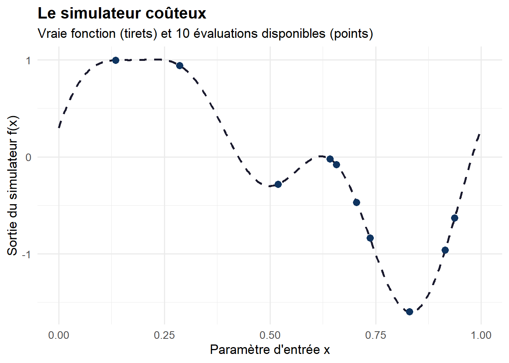
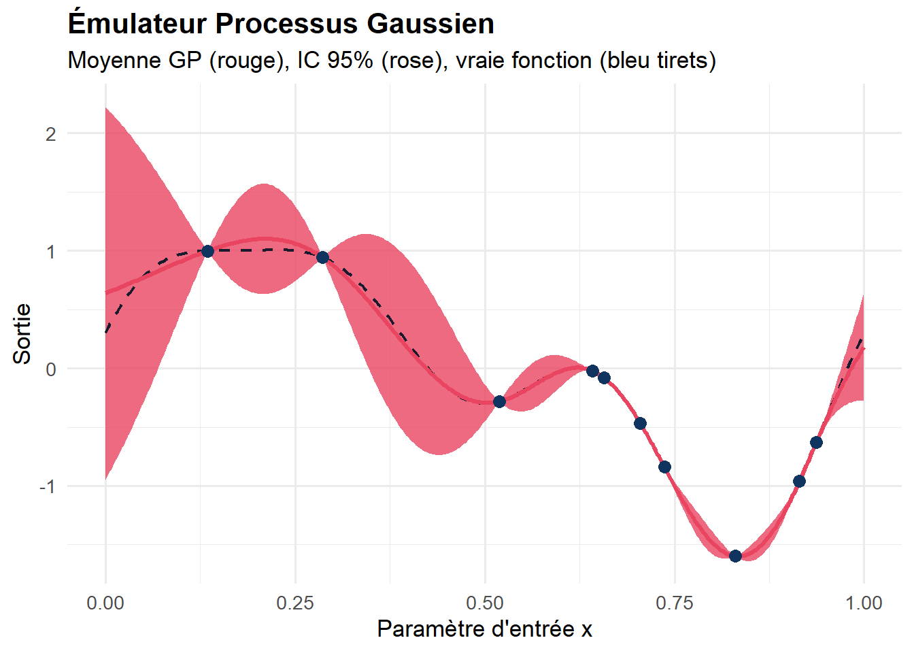
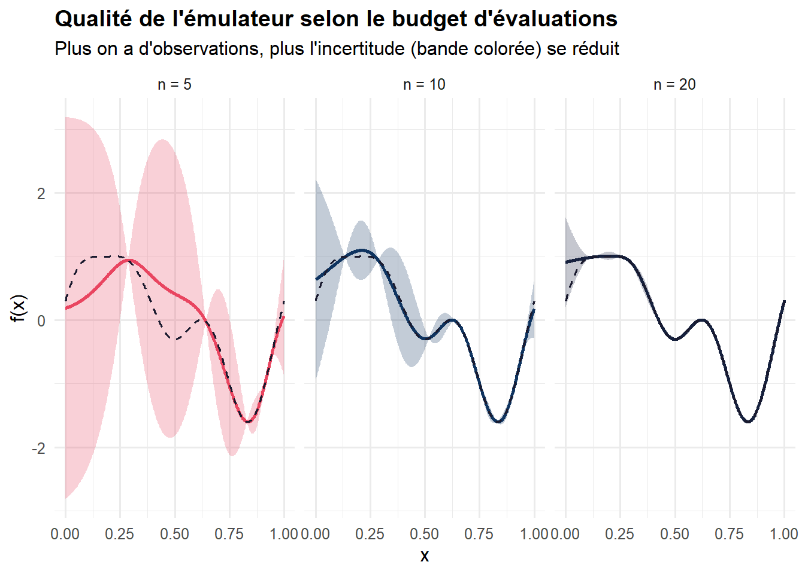
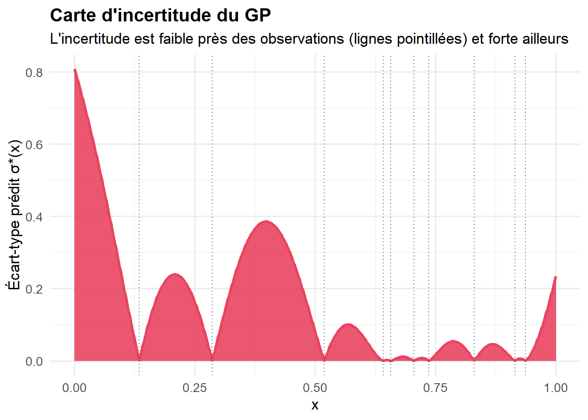
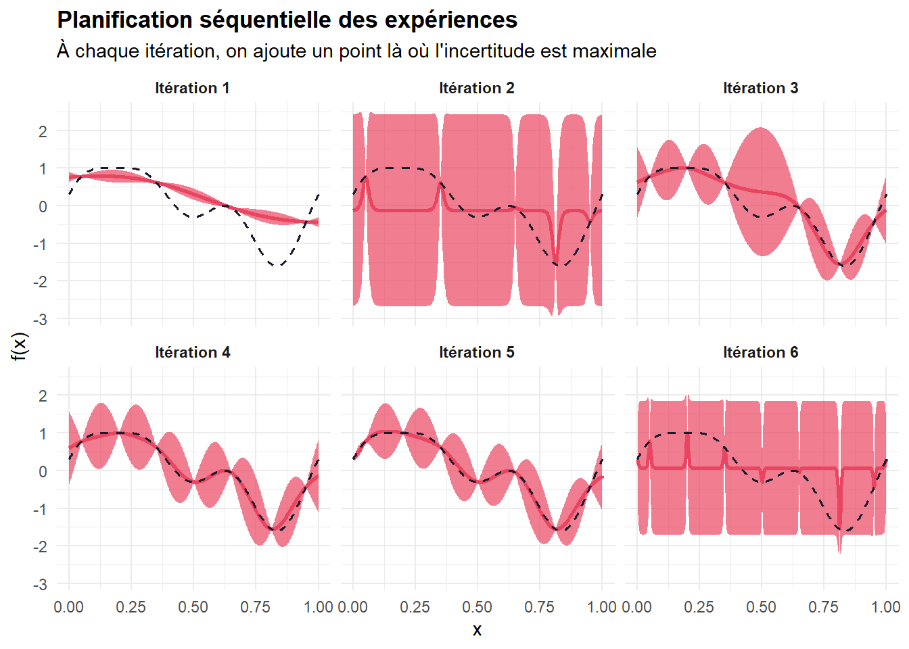
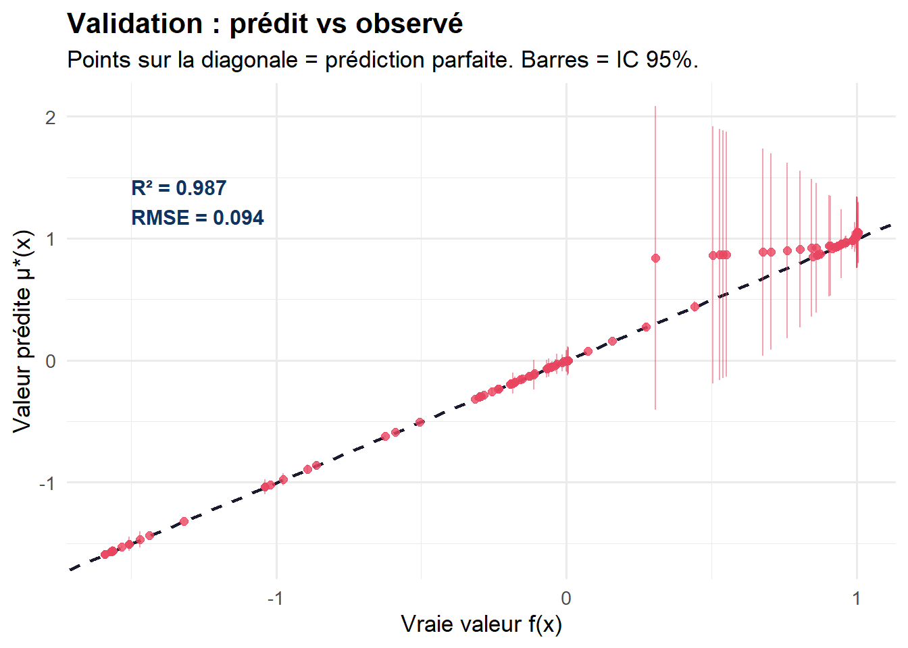
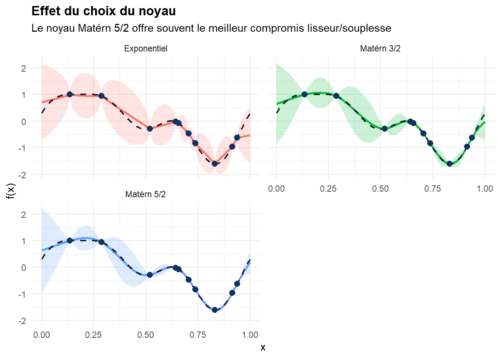
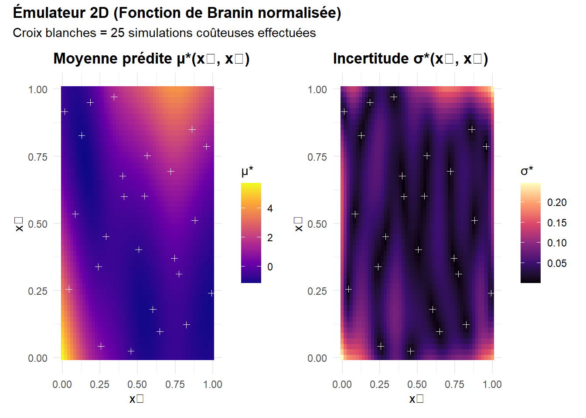
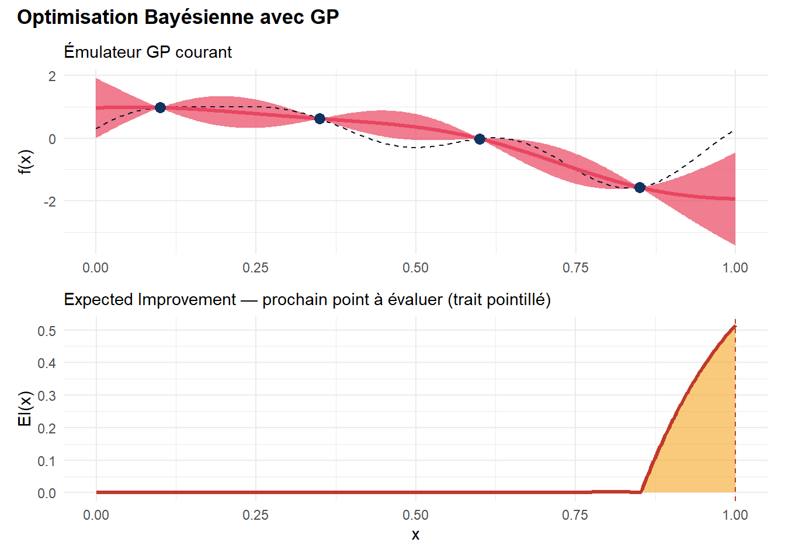

# Installation des packages nécessaires
# install.packages(c("DiceKriging", "ggplot2", "dplyr", "tidyr"))
library(DiceKriging)
library(ggplot2)
library(dplyr)
library(tidyr)
# Palette de couleurs cohérente
col_sim <- "#1a1a2e" # bleu nuit pour la vraie fonction
col_gp <- "#e94560" # rouge vif pour la moyenne GP
col_band <- "#e9456030" # bande d'incertitude
col_pts <- "#0f3460" # points d'observationGaussian Process Surrogate Modeling
Introduction : quand simuler coûte cher
Imaginez que vous travaillez pour un bureau d’études aéronautique. Vous devez optimiser la forme d’une aile d’avion en fonction de dizaines de paramètres : l’épaisseur du profil, l’angle d’attaque, la courbure, etc. Pour évaluer chaque configuration, vous lancez une simulation numérique de mécanique des fluides (CFD) qui… tourne pendant 48 heures sur un cluster de calcul. Explorer l’espace des paramètres avec des méthodes classiques deviendrait rapidement prohibitif : des milliers de simulations, des années de calcul.
Ce problème est omniprésent en ingénierie et en sciences : comment optimiser ou analyser un système dont chaque évaluation est extrêmement coûteuse ?
La réponse : construire un émulateur (aussi appelé surrogate model ou métamodèle) — un modèle statistique rapide à évaluer qui imite fidèlement le simulateur original. Parmi les techniques d’émulation, les processus gaussiens (GP) se distinguent comme une référence incontournable.
Qu’est-ce qu’un processus gaussien ?
L’idée intuitive
Un processus gaussien est une façon de placer une distribution de probabilité sur des fonctions. Au lieu de supposer que la réalité suit une forme paramétrique fixe (linéaire, polynomiale…), on dit simplement :
“La vraie fonction \(f\) est quelque part dans cet immense espace de fonctions. Les observations dont je dispose me permettent de restreindre les candidats plausibles.”
Concrètement, un GP est entièrement caractérisé par deux ingrédients :
- Une fonction de moyenne \(m(\mathbf{x})\) : ce qu’on croit a priori sur la valeur de la fonction (souvent prise nulle ou constante).
- Une fonction de covariance (ou noyau) \(k(\mathbf{x}, \mathbf{x}')\) : qui encode à quel point les valeurs en deux points \(\mathbf{x}\) et \(\mathbf{x}'\) sont corrélées entre elles.
\[f(\mathbf{x}) \sim \mathcal{GP}\bigl(m(\mathbf{x}),\; k(\mathbf{x}, \mathbf{x}')\bigr)\]
La clé : le noyau
Le noyau est le cœur du modèle. Le noyau le plus classique est le noyau RBF (Radial Basis Function), aussi appelé noyau gaussien ou squared exponential :
\[k(\mathbf{x}, \mathbf{x}') = \sigma^2 \exp\!\left(-\frac{\|\mathbf{x} - \mathbf{x}'\|^2}{2\ell^2}\right)\]
- \(\sigma^2\) contrôle la variance (amplitude des variations).
- \(\ell\) est la longueur de corrélation : plus elle est grande, plus la fonction est lisse.
L’intuition est simple : deux points proches dans l’espace des entrées ont des sorties corrélées. Si \(f(x_1)\) est grande et que \(x_2\) est proche de \(x_1\), alors \(f(x_2)\) sera probablement grande aussi.
Illustration en R : un émulateur simple
Prenons une fonction “simulateur” 1D coûteuse que l’on ne veut évaluer qu’en quelques points, puis construisons un GP pour l’émuler.
Le simulateur coûteux
# Notre "simulateur coûteux" : une fonction oscillante non-linéaire
# En pratique, cela serait un code CFD, FEM, ou autre prenant des heures
simulator <- function(x) {
sin(2 * pi * x) + 0.5 * sin(4 * pi * x) + 0.3 * cos(6 * pi * x)
}
# Grille fine pour visualiser la "vraie" fonction
x_fine <- seq(0, 1, length.out = 500)
y_true <- simulator(x_fine)
# On n'a le droit qu'à n évaluations coûteuses !
set.seed(42)
n_obs <- 10
x_obs <- sort(runif(n_obs, 0, 1))
y_obs <- simulator(x_obs)
# Visualisation initiale
df_true <- data.frame(x = x_fine, y = y_true)
df_obs <- data.frame(x = x_obs, y = y_obs)
ggplot() +
geom_line(data = df_true, aes(x, y),
color = col_sim, linewidth = 1, linetype = "dashed") +
geom_point(data = df_obs, aes(x, y),
color = col_pts, size = 3, shape = 16) +
labs(
title = "Le simulateur coûteux",
subtitle = paste0("Vraie fonction (tirets) et ", n_obs, " évaluations disponibles (points)"),
x = "Paramètre d'entrée x",
y = "Sortie du simulateur f(x)"
) +
theme_minimal(base_size = 13) +
theme(plot.title = element_text(face = "bold"))
Ajustement du processus gaussien
# Ajustement du GP avec DiceKriging
# Le noyau matern5_2 est souvent préféré en pratique (moins lisse que RBF)
gp_model <- km(
formula = ~1, # fonction de tendance constante
design = data.frame(x = x_obs),
response = y_obs,
covtype = "matern5_2", # noyau de Matérn 5/2
optim.method = "BFGS", # optimisation de la vraisemblance
control = list(trace = FALSE)
)
# Résumé du modèle ajusté
summary(gp_model)Length Class Mode
1 km S4 Prédiction et intervalles de confiance
# Prédiction sur la grille fine
pred <- predict(
gp_model,
newdata = data.frame(x = x_fine),
type = "UK" # Universal Kriging
)
# Assemblage des résultats
df_pred <- data.frame(
x = x_fine,
mean = pred$mean,
lower = pred$lower95,
upper = pred$upper95,
true = y_true
)
# Visualisation de l'émulateur
ggplot(df_pred, aes(x = x)) +
# Intervalle de confiance à 95%
geom_ribbon(aes(ymin = lower, ymax = upper),
fill = col_band, alpha = 0.8) +
# Vraie fonction
geom_line(aes(y = true),
color = col_sim, linewidth = 0.8, linetype = "dashed") +
# Prédiction GP
geom_line(aes(y = mean),
color = col_gp, linewidth = 1.2) +
# Points d'observation
geom_point(data = df_obs, aes(x = x, y = y),
color = col_pts, size = 3, shape = 16) +
labs(
title = "Émulateur Processus Gaussien",
subtitle = "Moyenne GP (rouge), IC 95% (rose), vraie fonction (bleu tirets)",
x = "Paramètre d'entrée x",
y = "Sortie"
) +
theme_minimal(base_size = 13) +
theme(plot.title = element_text(face = "bold"))
Impact du nombre d’observations
# Comparaison avec différents nombres d'observations
fit_and_predict <- function(n, seed = 42) {
set.seed(seed)
x_n <- sort(runif(n, 0, 1))
y_n <- simulator(x_n)
mod <- km(
formula = ~1,
design = data.frame(x = x_n),
response = y_n,
covtype = "matern5_2",
control = list(trace = FALSE)
)
p <- predict(mod, newdata = data.frame(x = x_fine), type = "UK")
data.frame(
x = x_fine,
mean = p$mean,
lower = p$lower95,
upper = p$upper95,
n_obs = as.factor(paste0("n = ", n))
)
}
df_compare <- bind_rows(
fit_and_predict(5),
fit_and_predict(10),
fit_and_predict(20)
)
df_true_rep <- data.frame(x = x_fine, y = y_true)
ggplot(df_compare, aes(x = x)) +
geom_ribbon(aes(ymin = lower, ymax = upper, fill = n_obs), alpha = 0.25) +
geom_line(aes(y = mean, color = n_obs), linewidth = 1) +
geom_line(data = df_true_rep, aes(x, y),
color = col_sim, linetype = "dashed", linewidth = 0.7) +
scale_color_manual(values = c("#e94560", "#0f3460", "#16213e")) +
scale_fill_manual(values = c("#e94560", "#0f3460", "#16213e")) +
facet_wrap(~n_obs, ncol = 3) +
labs(
title = "Qualité de l'émulateur selon le budget d'évaluations",
subtitle = "Plus on a d'observations, plus l'incertitude (bande colorée) se réduit",
x = "x", y = "f(x)"
) +
theme_minimal(base_size = 12) +
theme(
plot.title = element_text(face = "bold"),
legend.position = "none"
)
L’incertitude : l’atout majeur du GP
Une caractéristique essentielle qui distingue les GP d’autres méthodes d’émulation (réseaux de neurones, polynômes, etc.) est la quantification automatique de l’incertitude.
# Calcul de l'incertitude (écart-type) sur toute la grille
df_uncertainty <- df_pred %>%
mutate(std = (upper - lower) / (2 * 1.96))
ggplot(df_uncertainty, aes(x = x, y = std)) +
geom_area(fill = col_band, alpha = 0.9) +
geom_line(color = col_gp, linewidth = 1.2) +
geom_vline(xintercept = x_obs,
linetype = "dotted", color = col_pts, alpha = 0.7) +
labs(
title = "Carte d'incertitude du GP",
subtitle = "L'incertitude est faible près des observations (lignes pointillées) et forte ailleurs",
x = "x",
y = "Écart-type prédit σ*(x)"
) +
theme_minimal(base_size = 13) +
theme(plot.title = element_text(face = "bold"))
Cette carte d’incertitude est précieuse : elle indique où le modèle est peu sûr de lui, et donc où il serait le plus utile d’effectuer de nouvelles simulations.
Application : planification séquentielle des expériences
L’incertitude du GP permet une stratégie d’exploration dite active ou séquentielle : on choisit intelligemment le prochain point à simuler là où l’incertitude est maximale.
# Stratégie séquentielle : choisir le point de plus haute incertitude
sequential_gp <- function(n_init = 5, n_budget = 8, seed = 42) {
set.seed(seed)
# Points initiaux (plan d'expériences Latin Hypercube-like)
x_current <- seq(0.05, 0.95, length.out = n_init)
y_current <- simulator(x_current)
history <- list()
for (iter in 1:n_budget) {
mod <- km(
formula = ~1,
design = data.frame(x = x_current),
response = y_current,
covtype = "matern5_2",
control = list(trace = FALSE)
)
p <- predict(mod, newdata = data.frame(x = x_fine), type = "UK")
std_pred <- (p$upper95 - p$lower95) / (2 * 1.96)
history[[iter]] <- data.frame(
x = x_fine,
mean = p$mean,
std = std_pred,
iter = iter,
n_total = n_init + iter - 1
)
# Prochain point : maximum d'incertitude
x_next <- x_fine[which.max(std_pred)]
y_next <- simulator(x_next)
x_current <- c(x_current, x_next)
y_current <- c(y_current, y_next)
}
bind_rows(history)
}
df_seq <- sequential_gp(n_init = 4, n_budget = 6)
# Visualisation des 3 premières et 3 dernières itérations
df_sel <- df_seq %>% filter(iter %in% c(1, 2, 3, 4, 5, 6))
ggplot(df_sel) +
geom_ribbon(aes(x = x, ymin = mean - 1.96 * std, ymax = mean + 1.96 * std),
fill = col_band, alpha = 0.7) +
geom_line(aes(x = x, y = mean), color = col_gp, linewidth = 1) +
geom_line(data = df_true_rep, aes(x, y),
color = col_sim, linetype = "dashed", linewidth = 0.7) +
facet_wrap(~paste0("Itération ", iter), ncol = 3) +
labs(
title = "Planification séquentielle des expériences",
subtitle = "À chaque itération, on ajoute un point là où l'incertitude est maximale",
x = "x", y = "f(x)"
) +
theme_minimal(base_size = 11) +
theme(
plot.title = element_text(face = "bold"),
strip.text = element_text(face = "bold")
)
Évaluation de la qualité : métriques de validation
Comment savoir si notre émulateur est “bon” ? On évalue sa performance sur un jeu de test que le GP n’a pas vu.
set.seed(2024)
# Données d'entraînement (plan d'expériences)
n_train <- 15
x_train <- sort(runif(n_train, 0, 1))
y_train <- simulator(x_train)
# Données de test (indépendantes)
n_test <- 100
x_test <- sort(runif(n_test, 0, 1))
y_test <- simulator(x_test)
# Ajustement final
gp_final <- km(
formula = ~1,
design = data.frame(x = x_train),
response = y_train,
covtype = "matern5_2",
control = list(trace = FALSE)
)
# Prédictions sur le jeu de test
pred_test <- predict(gp_final,
newdata = data.frame(x = x_test),
type = "UK")
df_val <- data.frame(
x_test = x_test,
y_true = y_test,
y_pred = pred_test$mean,
std = (pred_test$upper95 - pred_test$lower95) / (2 * 1.96),
residual = y_test - pred_test$mean
)
# Métriques de performance
rmse <- sqrt(mean(df_val$residual^2))
mae <- mean(abs(df_val$residual))
r2 <- 1 - sum(df_val$residual^2) / sum((y_test - mean(y_test))^2)
# Couverture empirique de l'IC à 95%
in_ci <- mean(
y_test >= pred_test$lower95 & y_test <= pred_test$upper95
)
cat("=== Métriques de validation ===\n")=== Métriques de validation ===cat(sprintf("RMSE : %.4f\n", rmse))RMSE : 0.0937cat(sprintf("MAE : %.4f\n", mae))MAE : 0.0326cat(sprintf("R² : %.4f\n", r2))R² : 0.9875cat(sprintf("Couverture IC 95%% : %.1f%%\n", 100 * in_ci))Couverture IC 95% : 100.0%# Graphique prédit vs observé
ggplot(df_val, aes(x = y_true, y = y_pred)) +
geom_abline(slope = 1, intercept = 0,
color = col_sim, linetype = "dashed", linewidth = 0.8) +
geom_errorbar(aes(ymin = y_pred - 1.96 * std,
ymax = y_pred + 1.96 * std),
color = col_band, alpha = 0.5, width = 0) +
geom_point(color = col_gp, size = 2, alpha = 0.8) +
annotate("text", x = -1.5, y = 1.3,
label = sprintf("R² = %.3f\nRMSE = %.3f", r2, rmse),
hjust = 0, size = 4, color = col_pts, fontface = "bold") +
labs(
title = "Validation : prédit vs observé",
subtitle = "Points sur la diagonale = prédiction parfaite. Barres = IC 95%.",
x = "Vraie valeur f(x)",
y = "Valeur prédite μ*(x)"
) +
theme_minimal(base_size = 13) +
theme(plot.title = element_text(face = "bold"))
Avantages et limites des processus gaussiens
✅ Avantages
| Propriété | Description |
|---|---|
| Incertitude calibrée | Le GP fournit des intervalles de confiance fiables, pas seulement une prédiction ponctuelle |
| Interpolation exacte | Par défaut, le GP passe exactement par les données d’entraînement |
| Peu de données | Très performant avec un petit budget d’évaluations (10–100 points) |
| Flexibilité | Le choix du noyau permet d’encoder des connaissances a priori sur la régularité de \(f\) |
| Optimisation bayésienne | L’incertitude du GP est au cœur des algorithmes d’optimisation efficace (BO) |
| Base théorique solide | Cadre probabiliste bien établi, interprétable |
⚠️ Limites
| Défi | Explication |
|---|---|
| Passage à l’échelle | Complexité \(\mathcal{O}(n^3)\) pour \(n\) observations → difficile au-delà de ~5 000 points |
| Malédiction de la dimensionnalité | Performance se dégrade avec le nombre de variables d’entrée (>~20) |
| Choix du noyau | Nécessite une expertise ou une validation croisée soignée |
| Stationnarité | Le noyau RBF suppose une régularité uniforme — inadapté aux fonctions avec zones localement irrégulières |
Noyaux alternatifs et leurs effets
# Comparaison de différents noyaux
kernels <- c("gauss", "matern5_2", "matern3_2", "exp")
labels <- c("Gaussien (RBF)", "Matérn 5/2", "Matérn 3/2", "Exponentiel")
results <- mapply(function(k, lab) {
mod <- tryCatch(
km(formula = ~1,
design = data.frame(x = x_obs),
response = y_obs,
covtype = k,
control = list(trace = FALSE)),
error = function(e) NULL
)
if (is.null(mod)) return(NULL)
p <- predict(mod, newdata = data.frame(x = x_fine), type = "UK")
data.frame(x = x_fine, mean = p$mean,
lower = p$lower95, upper = p$upper95,
kernel = lab)
}, kernels, labels, SIMPLIFY = FALSE)
df_kernels <- bind_rows(results)
ggplot(df_kernels, aes(x = x)) +
geom_ribbon(aes(ymin = lower, ymax = upper, fill = kernel), alpha = 0.2) +
geom_line(aes(y = mean, color = kernel), linewidth = 1) +
geom_line(data = df_true_rep, aes(x, y),
color = col_sim, linetype = "dashed", linewidth = 0.8) +
geom_point(data = df_obs, aes(x = x, y = y),
color = col_pts, size = 2.5) +
facet_wrap(~kernel, ncol = 2) +
labs(
title = "Effet du choix du noyau",
subtitle = "Le noyau Matérn 5/2 offre souvent le meilleur compromis lisseur/souplesse",
x = "x", y = "f(x)"
) +
theme_minimal(base_size = 11) +
theme(
plot.title = element_text(face = "bold"),
legend.position = "none"
)
Le noyau Matérn 5/2 est généralement recommandé en émulation de simulateurs physiques : il suppose que la fonction est deux fois différentiable, ce qui est raisonnable sans être trop restrictif.
Exemple 2D : émulation d’une fonction de deux paramètres
En ingénierie, les simulateurs dépendent souvent de plusieurs paramètres. Voici un exemple 2D.
# Simulateur 2D : fonction de Branin (benchmark classique d'optimisation)
branin <- function(x1, x2) {
# Variables normalisées vers [0,1]
x1 <- 15 * x1 - 5
x2 <- 15 * x2
a <- 1; b <- 5.1 / (4 * pi^2); c <- 5 / pi
r <- 6; s <- 10; t <- 1 / (8 * pi)
a * (x2 - b * x1^2 + c * x1 - r)^2 + s * (1 - t) * cos(x1) + s
}
# Plan d'expériences 2D (Latin Hypercube)
set.seed(42)
n2d <- 25
# Approximation LHS manuelle
lhs_2d <- function(n, d) {
mat <- matrix(0, n, d)
for (j in 1:d) {
perm <- sample(n)
mat[, j] <- (perm - runif(n)) / n
}
mat
}
X2d <- lhs_2d(n2d, 2)
y2d <- mapply(branin, X2d[, 1], X2d[, 2])
y2d_s <- (y2d - mean(y2d)) / sd(y2d) # normalisation
# Ajustement GP 2D
gp2d <- km(
formula = ~1,
design = data.frame(x1 = X2d[, 1], x2 = X2d[, 2]),
response = y2d_s,
covtype = "matern5_2",
control = list(trace = FALSE)
)
# Grille de prédiction 2D
grid2d <- expand.grid(
x1 = seq(0, 1, length.out = 50),
x2 = seq(0, 1, length.out = 50)
)
pred2d <- predict(gp2d, newdata = grid2d, type = "UK")
grid2d$mean <- pred2d$mean
grid2d$std <- (pred2d$upper95 - pred2d$lower95) / (2 * 1.96)
# Carte de la prédiction
p1 <- ggplot(grid2d, aes(x = x1, y = x2, fill = mean)) +
geom_tile() +
geom_point(data = data.frame(X2d), aes(x = X2d[,1], y = X2d[,2]),
inherit.aes = FALSE,
color = "white", size = 1.5, shape = 3) +
scale_fill_viridis_c(option = "plasma") +
labs(title = "Moyenne prédite μ*(x₁, x₂)",
x = "x₁", y = "x₂", fill = "μ*") +
theme_minimal(base_size = 11) +
theme(plot.title = element_text(face = "bold"))
# Carte d'incertitude
p2 <- ggplot(grid2d, aes(x = x1, y = x2, fill = std)) +
geom_tile() +
geom_point(data = data.frame(X2d), aes(x = X2d[,1], y = X2d[,2]),
inherit.aes = FALSE,
color = "white", size = 1.5, shape = 3) +
scale_fill_viridis_c(option = "magma") +
labs(title = "Incertitude σ*(x₁, x₂)",
x = "x₁", y = "x₂", fill = "σ*") +
theme_minimal(base_size = 11) +
theme(plot.title = element_text(face = "bold"))
library(patchwork)
p1 + p2 +
plot_annotation(
title = "Émulateur 2D (Fonction de Branin normalisée)",
subtitle = "Croix blanches = 25 simulations coûteuses effectuées",
theme = theme(plot.title = element_text(face = "bold", size = 13))
)
GP et optimisation bayésienne : aller plus loin
L’émulation GP est aussi le moteur de l’optimisation bayésienne (Bayesian Optimization, BO), une méthode pour trouver le minimum (ou maximum) d’une fonction coûteuse en un minimum d’évaluations. La stratégie repose sur une fonction d’acquisition qui exploite l’incertitude du GP pour guider l’exploration :
- Expected Improvement (EI) : choisit le point qui maximise l’espérance d’amélioration par rapport au meilleur résultat connu.
- Upper Confidence Bound (UCB) : compromis explicite entre exploitation (zones de haute prédiction) et exploration (zones d’haute incertitude).
# Calcul de l'Expected Improvement
expected_improvement <- function(mu, sigma, y_best, xi = 0.01) {
z <- (y_best - mu - xi) / sigma
ei <- (y_best - mu - xi) * pnorm(z) + sigma * dnorm(z)
ei[sigma <= 0] <- 0
ei
}
# Modèle courant avec quelques observations
set.seed(7)
x_bo <- c(0.1, 0.35, 0.6, 0.85)
y_bo <- simulator(x_bo)
gp_bo <- km(formula = ~1,
design = data.frame(x = x_bo),
response = y_bo,
covtype = "matern5_2",
control = list(trace = FALSE))
pred_bo <- predict(gp_bo, newdata = data.frame(x = x_fine), type = "UK")
mu_bo <- pred_bo$mean
sig_bo <- (pred_bo$upper95 - pred_bo$lower95) / (2 * 1.96)
ei_bo <- expected_improvement(mu_bo, sig_bo, y_best = min(y_bo))
df_bo <- data.frame(x = x_fine, mu = mu_bo, sig = sig_bo,
ei = ei_bo, true = y_true)
# Plot combiné
p_gp <- ggplot(df_bo, aes(x)) +
geom_ribbon(aes(ymin = mu - 1.96 * sig, ymax = mu + 1.96 * sig),
fill = col_band, alpha = 0.7) +
geom_line(aes(y = true), color = col_sim, linetype = "dashed") +
geom_line(aes(y = mu), color = col_gp, linewidth = 1.2) +
geom_point(data = data.frame(x = x_bo, y = y_bo),
aes(x, y), color = col_pts, size = 3) +
labs(subtitle = "Émulateur GP courant", x = NULL, y = "f(x)") +
theme_minimal(base_size = 11)
p_ei <- ggplot(df_bo, aes(x, ei)) +
geom_area(fill = "#f5a623", alpha = 0.6) +
geom_line(color = "#c0392b", linewidth = 1.2) +
geom_vline(xintercept = x_fine[which.max(ei_bo)],
color = "#c0392b", linetype = "dashed") +
labs(subtitle = "Expected Improvement — prochain point à évaluer (trait pointillé)",
x = "x", y = "EI(x)") +
theme_minimal(base_size = 11)
p_gp / p_ei +
plot_annotation(
title = "Optimisation Bayésienne avec GP",
theme = theme(plot.title = element_text(face = "bold", size = 13))
)
Conclusion
Les processus gaussiens offrent un cadre élégant et puissant pour l’émulation de simulateurs coûteux. Leurs atouts principaux :
- Prédiction + incertitude en un seul modèle, avec des bases théoriques solides.
- Efficacité avec peu de données : idéal quand chaque simulation coûte cher.
- Guide l’exploration : l’incertitude informe où observer en priorité.
- Fondement de l’optimisation bayésienne : une des méthodes d’optimisation sans gradient les plus efficaces.
Pour aller plus loin en R, explorez les packages DiceKriging, mlegp, GPfit, ou laGP pour les grands jeux de données. En Python, GPy, scikit-learn et BoTorch sont des références.
Article rédigé avec R, Quarto et les packages DiceKriging, ggplot2, et patchwork.
Comment fonctionne la prédiction ?
Conditionnement bayésien
Supposons qu’on ait effectué \(n\) simulations coûteuses aux points \(\mathbf{X} = \{\mathbf{x}_1, \ldots, \mathbf{x}_n\}\), donnant les observations \(\mathbf{y} = \{y_1, \ldots, y_n\}\).
On veut prédire \(f(\mathbf{x}^*)\) en un nouveau point \(\mathbf{x}^*\). La beauté du GP est que cette distribution conditionnelle est analytiquement calculable et reste gaussienne :
\[f(\mathbf{x}^*) \mid \mathbf{X}, \mathbf{y} \;\sim\; \mathcal{N}\!\bigl(\mu^*,\; (\sigma^*)^2\bigr)\]
avec :
\[\mu^* = m(\mathbf{x}^*) + \mathbf{k}_*^\top \mathbf{K}^{-1}(\mathbf{y} - m(\mathbf{X}))\]
\[(\sigma^*)^2 = k(\mathbf{x}^*, \mathbf{x}^*) - \mathbf{k}_*^\top \mathbf{K}^{-1} \mathbf{k}_*\]
où \(\mathbf{K}\) est la matrice de Gram (\(K_{ij} = k(\mathbf{x}_i, \mathbf{x}_j)\)) et \(\mathbf{k}_* = [k(\mathbf{x}^*, \mathbf{x}_1), \ldots, k(\mathbf{x}^*, \mathbf{x}_n)]^\top\).
Le résultat est double : on obtient à la fois une prédiction (\(\mu^*\)) et une mesure d’incertitude (\(\sigma^*\)) — ce qui est exceptionnel.